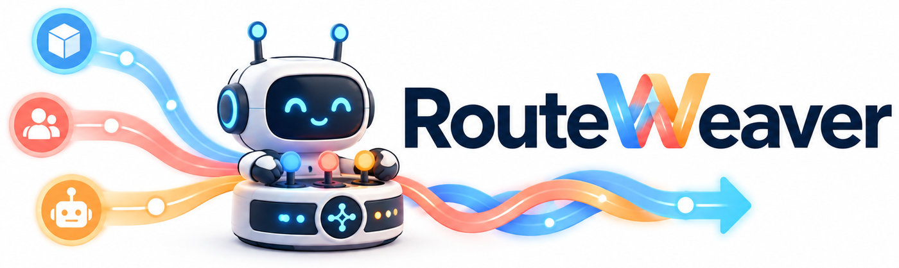
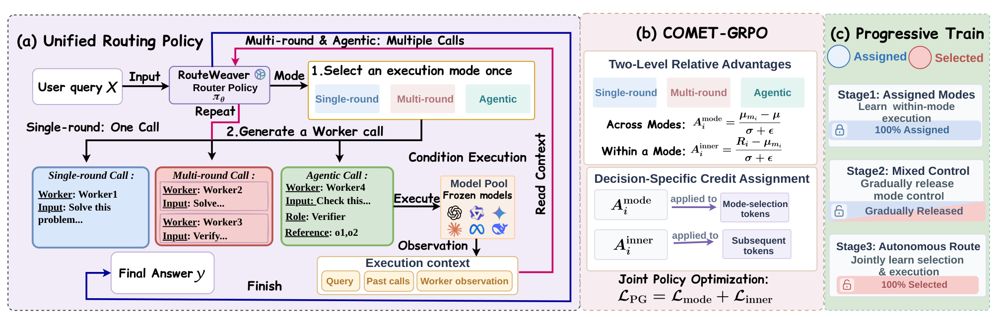

Unified LLM Routing
Three ways to route. One policy that chooses.
1Nanyang Technological University · 2Huazhong University of Science and Technology · 3University of Illinois Urbana-Champaign
The problem
Existing routers fix how model calls are organized before they ever see a query — and the best fixed choice is different in every domain.
Cheapest and strongest among baselines on Reason and Recall — and badly outmatched on Code.
Each call reads the previous observation. Best among baselines on Math, Code and Knowledge; wasteful on a one-hop lookup.
Parallel calls with roles and references. Powerful where the work decomposes, overkill where it does not.
Which paradigm is strongest flips between domains, so any router that commits to one in advance has already given up accuracy somewhere. RouteWeaver makes the paradigm itself a routing decision.
Method
One Qwen3-4B policy writes the mode, then routes six frozen workers inside it — referring to them only by anonymous IDs with capability descriptions, never by model name or price.

A rollout is (m, a₁, o₁, …, a_T, o_T, y): the mode, then worker calls
interleaved with environment observations, then the answer. Single-round is exactly one
call, multi-round two to four sequential calls, agentic up to eight calls over
role- and reference-structured layers.
The mode, the actions and the answer are policy tokens. Worker output is context only — it never carries a gradient.
A low reward may mean the wrong mode, or the right mode executed badly. Ordinary GRPO cannot tell: it puts one trajectory-level advantage on every router token. COMET-GRPO splits it into an across-mode and a within-mode comparison, sharing one group σ so the two sum back to the original signal exactly.
If the router chose modes from the start, an early preference would starve the others of experience. Progressive exploration forces the mode with probability ρ_b, annealed from all forced to all free, so the policy learns to execute each mode first and inherits the choice second.
Results
Nine benchmarks over five domains, against ten routers spanning all three execution paradigms.
| Method | Math | Code | Knowledge | Reason | Recall | Avg |
|---|---|---|---|---|---|---|
| Single-round routers | ||||||
| Router-KNN | 61.7 | 34.8 | 38.3 | 68.3 | 40.4 | 48.7 |
| Router-MLP | 58.7 | 33.2 | 40.0 | 59.2 | 34.2 | 45.1 |
| RouterDC | 61.3 | 29.4 | 34.2 | 57.5 | 35.0 | 43.5 |
| GraphRouter | 64.6 | 36.1 | 34.2 | 69.2 | 39.6 | 48.7 |
| Multi-round routers | ||||||
| Prompt LLM | 45.8 | 33.7 | 29.2 | 54.2 | 30.0 | 38.6 |
| Router-KNN-MR | 40.8 | 33.2 | 30.8 | 48.3 | 29.6 | 36.6 |
| R2-Reasoner | 45.8 | 30.7 | 28.3 | 50.0 | 23.3 | 35.6 |
| Router-R1 | 66.3 | 52.8 | 48.9 | 68.7 | 39.8 | 55.3 |
| Agentic routers | ||||||
| MasRouter | 54.2 | 37.6 | 41.7 | 62.5 | 38.3 | 46.8 |
| GraphPlanner | 47.5 | 48.3 | 30.0 | 54.2 | 39.2 | 43.8 |
| RouteWeaver | 74.6+12.52% | 58.2+10.23% | 55.0+12.47% | 76.7+10.84% | 42.5+5.20% | 61.4+11.03% |
Accuracy (%), RouteWeaver trained with α = 0. Domain accuracy is the unweighted mean of its datasets; Avg is the unweighted mean of the five domains. Parentheses give the relative improvement over the strongest baseline in that column. Relative gains over the best single-round, multi-round and agentic baseline are 26.08%, 11.03% and 31.20%.
| Variant | Avg | S / M / A |
|---|---|---|
| RouteWeaver | 61.4 | .35 / .41 / .24 |
| w/o COMET-GRPO | 58.8 | .13 / .82 / .05 |
| w/o progressive exploration | 55.6 | 1.00 / .00 / .00 |
Without decision-specific credit the policy concentrates on multi-round. Without the forced-to-free schedule it collapses entirely to single-round and stops being a mode-selecting router at all. Both ablations still beat the strongest fixed-paradigm baseline.
| Method | AIME | GPQA-D | BBH | Avg |
|---|---|---|---|---|
| GraphRouter | 23.5 | 49.5 | 24.7 | 32.6 |
| Router-R1 | 45.6 | 62.1 | 28.6 | 45.4 |
| MasRouter | 28.1 | 43.8 | 28.2 | 33.4 |
| RouteWeaver | 57.0 | 69.2 | 35.0 | 53.7 |
+11.4, +7.1 and +6.4 points over Router-R1. The adaptive behavior transfers too: agentic execution takes 75% of AIME queries but only 12% of BBH.
Routing behavior
The learned preferences differ sharply by domain — and in two of the five, almost every query goes to a single mode. Pick a domain:
Share of test queries per execution mode (α = 0). Slices the paper does not label individually are shown unlabelled, so the bars still sum to 100%.
Accuracy and cost
A second reward component scores worker cost, mixed in with weight α. Nothing else changes — same policy, same training, same pool.
The reported model: task reward only, no efficiency term.
Cost is fixed-reference worker inference cost per query; at α = 0 it is reconstructed from token usage. Accuracy at α = 0 is 61.4%; the deltas are relative to it. The α > 0 routers are released as RouteWeaver-4B-cost.
Get it
The training and evaluation code is one repository with two entry points, on an unpatched verl 0.8. Evaluation and training share the same code path.
git clone https://github.com/LaughKing/RouteWeaver.git && cd RouteWeaver bash setup_env.sh && conda activate routeweaver python data/hf_download.py bash scripts/train.sh cold # phase 1: every query forced bash scripts/train.sh main # phases 2-3: forced to free, with COMET-GRPO CKPT=... TAG=routeweaver GPU=0 OOD=1 bash scripts/eval.sh paper
@article{routeweaver2026,
title = {RouteWeaver: Weaving Mode Selection and Execution into Unified LLM Routing},
author = {Wang, Xiaohan and Zhang, Haozhen and Liu, Qingyuan and Feng, Tao and Wang, Wenya},
journal = {arXiv preprint},
year = {2026}
}